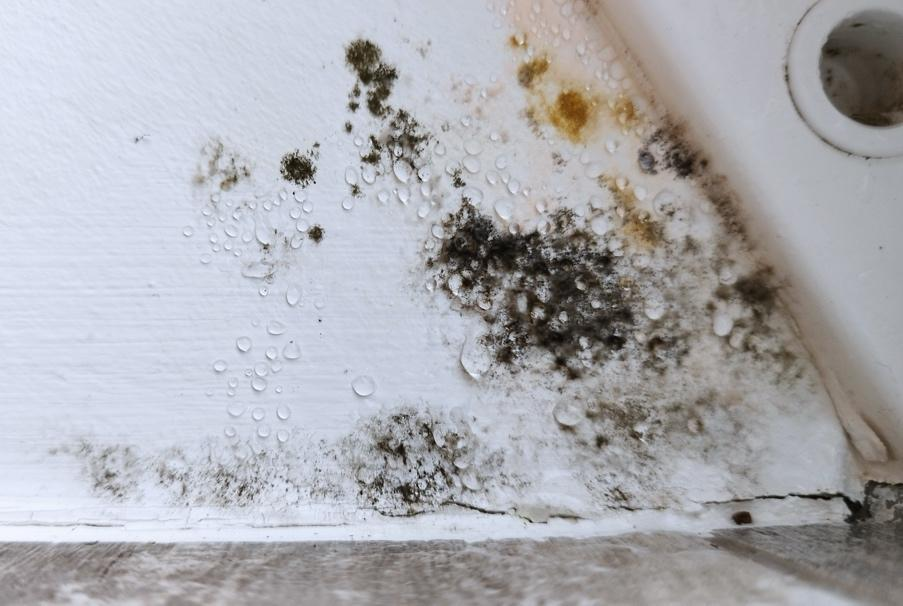
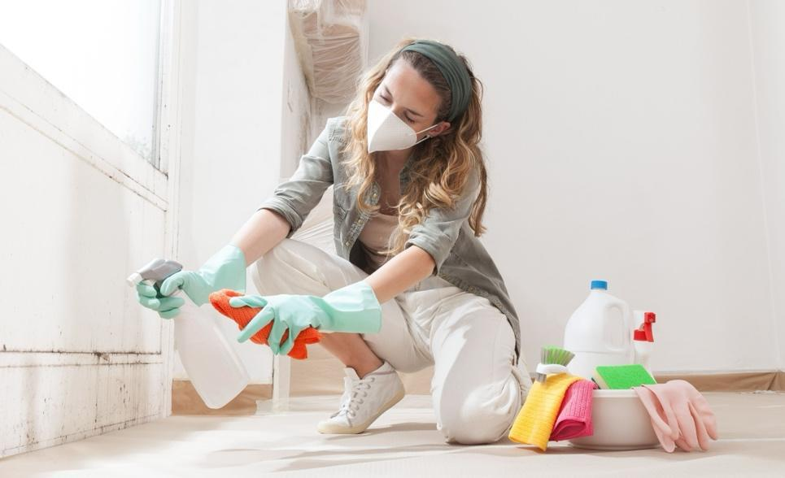

Mold allergies happen when your body reacts badly to tiny mold spores in the air. Mold is a fungus that grows in damp, wet places. You might see mold on walls, ceilings, or furniture that is wet or has water damage.
When you breathe in mold spores, your body can react by sneezing, coughing, or having itchy eyes. Mold can also cause asthma, which makes it hard to breathe. Some reactions may include skin rashes or a runny nose.

Keep your home dry: Fix leaks or water damage quickly.
Clean moldy areas: Regularly clean bathrooms, basements, and other damp spaces with soap and water or a mold cleaner. Wear gloves and a mask while cleaning.
Increase ventilation: Use fans or open windows to help air flow, especially in damp areas.
Avoid damp places: Stay away from basements, attics, or places with water damage.
Wear a mask: When cleaning or working around mold, wear a mask to keep spores out of your nose and mouth.
Wipe down surfaces: Regularly clean walls, windowsills, and other surfaces to prevent mold growth.
Control humidity: Keep indoor humidity below 50 percent. You can use a phone app to check the indoor humidity level. Use a dehumidifier if necessary.

Antihistamines: These medicines help stop sneezing, a runny nose, and itchy eyes.
Nasal sprays: These medicines spray into your nose to reduce swelling and help you breathe better.
Asthma inhaler: Use your controller medicines and rescue inhaler as directed by your care team.
Decongestants: These medicines help clear your nose if it is blocked.
Allergy shots: Your care team may suggest allergy shots if your symptoms are strong. These shots help your body get used to mold so you have fewer symptoms in the future.
Follow your care team’s advice. Use medicines the way they tell you to and avoid mold as much as possible.
Call your care team if:
Your allergy symptoms worsen or do not improve even when you take medicines.
Your symptoms get worse, and you also have asthma.
You have any changes in breathing.
You develop a fever, or your mucus turns yellow or green.
You have questions about your medicines or how to control your allergies.
Get help right away if:
You are having trouble breathing, or your lips and face are turning blue.
You feel faint, dizzy, or cannot speak clearly.
Your face, lips, tongue, or throat swell quickly, and you cannot breathe well.
You feel worse or have symptoms of a severe allergic reaction, like trouble swallowing or talking.
Thank you for trusting us with your care. We are here to support you and want you to feel your best. Contact us with any questions.
IF YOU HAVE A MEDICAL EMERGENCY, CALL 911 OR GO TO THE EMERGENCY ROOM.
The information presented is intended for general information and educational purposes. It is not intended to replace the advice of your health care provider. Contact your health care provider if you believe you have a health problem.
Last updated May 2025
© 2025 Mytonomy, Inc. All rights reserved.